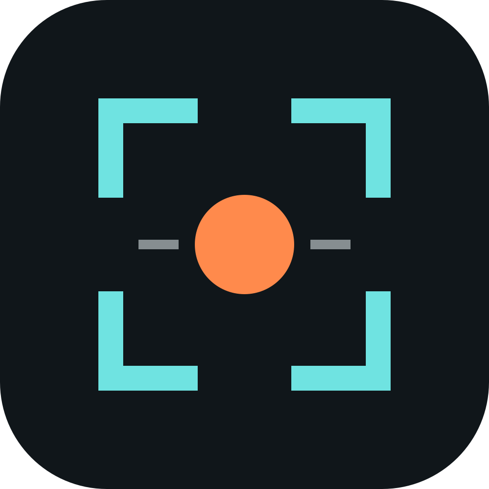

01
Mission log framing
Recording state, log number, running timecode, date and time, your name plate and a day counter that starts with your first log.

HUD RecorderHUD Recorder burns a live heads-up display into your recordings: timecode, device telemetry, weather and headlines, driven by real data from your own machine.
Free and MIT licensed. Installers are not code signed yet, so your system will ask for confirmation on first launch.
Concept demo with simulated values. The device, audio, weather and news panels are stable; speaker analysis and live captions are new and still being tested. In the app, every value on screen is real.
The camera image and the HUD are drawn onto one 1080p canvas, and that canvas is what gets recorded. The preview is the recording.
Recording state, log number, running timecode, date and time, your name plate and a day counter that starts with your first log.
Camera resolution, measured frame rate, free disk space, and NVIDIA GPU load, temperature and memory when available.
Level, peak hold and a live spectrum from your microphone, so you can see at a glance that sound is being captured.
Weather, humidity, wind, air quality, sunrise and sunset for a city you choose. Leave it empty to stay offline.
Headlines from any RSS or Atom feed rotate at the top of the frame and date your log like a newspaper in a photo.
Files are numbered and dated, saved as MP4, and listed in a plain JSON index. English and Simplified Chinese built in.
Optional on-device speech recognition puts live captions in the frame and saves them as subtitles. Mark chapters with one key while you record.
Resolution up to 4K, frame rate and bitrate, a switch for each HUD element, colours, opacity and typeface, all with a live preview.
Optional face tracking frame, head pose, eye contact and talk ratio, computed on your own machine.
A HUD is only worth reading if it is true. HUD Recorder shows real values or nothing: when a reading is unavailable, its row disappears instead of showing a made-up number.
Recordings stay in your own video folder. The app only goes online for the two things you switch on.
The project is young and built in the open. Ideas and bug reports are welcome on GitHub.